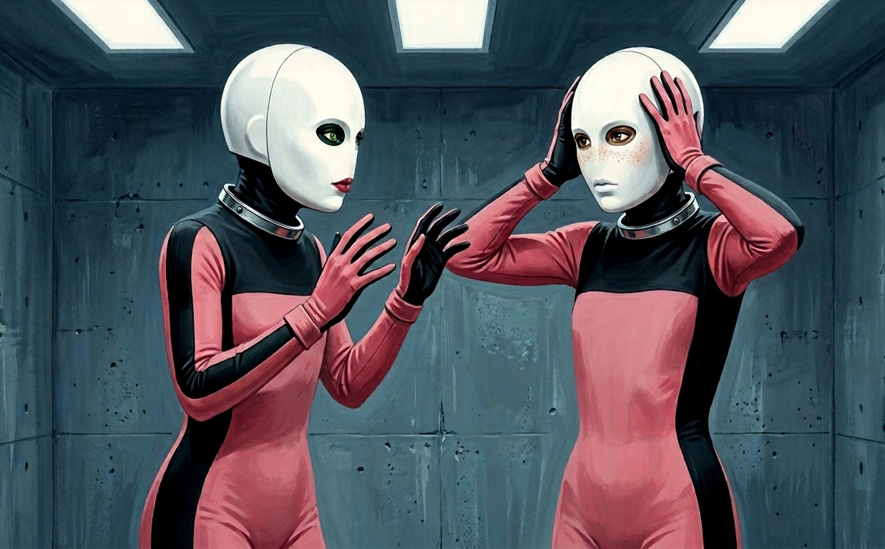
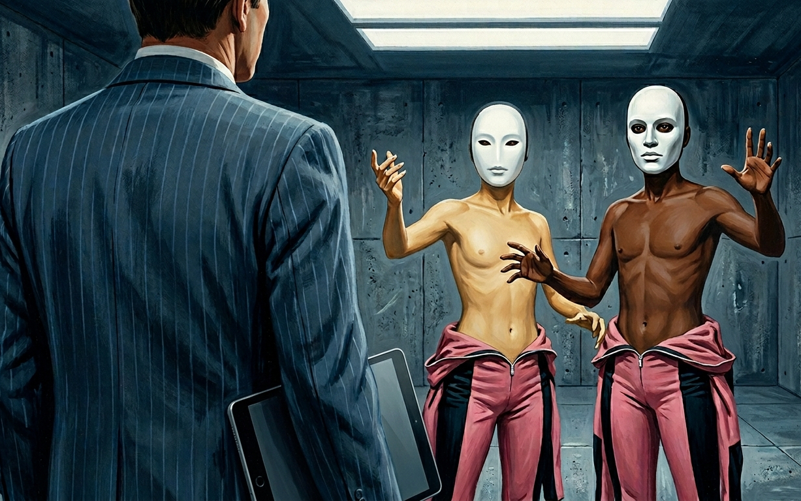

"Crispin." Connie's voice, unhurried, from somewhere Charlie couldn't place. "The eye shutters."
"Ah. Yes."
Two plates covering Charlie’s eye sockets retracted into the mask. His eyes came back the way they come back in a dark room, shapes first, then edges, then the slow click of knowing what you're looking at.
What he was looking at was five masks.
Charlie looked at the nearest one first. Porter’s cot. It was less a face than a rumor of one. The mask was white and smooth, a flat oval where a face should be, no nose, the surface unbroken except for the dark-rimmed eye holes and a pale cupid's bow at the mouth. The single thing that lifted it out of pure blankness was a pair of rose-tinted cheekbones pressed up under the porcelain, high and clean, the kind of bone structure that means money or good breeding.
The next cot. Austin’s. Same oval, same pale mouth, no cheekbones. At the outer corner of each eye hole the rim had been drawn out into a faint taper, the suggestion of an almond shape, so slight Charlie wasn't sure he'd seen it until he’d compared it to the others.
Jay. Rounded eyes and a mouth. But where the others had nothing in the center, Jay's had a nose, broad and flat, a small smooth rise out of the dead center of the surface, unmistakable, the only mask in the room that had bothered to try.
Peter. No nose. But across the upper cheeks a scattering of raised points, freckles pressed into the porcelain, small and spaced like the real thing.
Hal. He had turned away from Charlie but turning back he could see the oval, the eye holes, no nose. And the mouth, the same cupid's bow as the others, but in red. A deep ruby, lacquer-bright against the white, the only bright color in the room that wasn't the pink of their suits. You could not stop looking at it.
{kind=link}

Charlie went mask to mask and something gathered in his chest that was past dread. Not because the masks were grotesque. They weren't, and that was the trouble. They were barely faces at all, the same smooth white blank six times over, and into each blank one thing had been set, and only one, on purpose. A nose. A pair of cheekbones. Freckles. As if someone had started from nothing and was adding the face back one unit at a time.
Whose, though.
He turned, looking for a surface, a window, the steel of the door, anything that gave a reflection, and found what had been there since the first day, which was nothing. He raised his covered hands to the outside of the mask and felt its contours through the gloves and couldn't read them. A curve here. A hollow there. Shapes his fingers couldn't turn into a face. He pressed where his cheek should be and felt the mask and felt nothing under it that told him anything.
Worse, he could not ask. That came a beat behind the first thing and hit just as hard. He couldn't turn to Peter and say what does mine look like and get an answer. Couldn't turn to anyone. He could not produce one word. He lifted a hand toward his own face and spread his palms, a question, and waited for one of them to take pity.
None of them did. Peter held his freckled white oval on him a moment, long enough that Charlie thought something would come, and then deliberately looked away. Jay didn't turn at all. Austin he couldn't read, the almond eyes giving nothing, but the set of his shoulders was the set of a man who'd decided Charlie could find out the hard way, same as the rest of them had found out everything. They were still inside the argument. The masks had only taken the volume off it.
Vane cleared his throat.
"The masks will remain in place for approximately two weeks." He said it to the tablet, made a note, looked up. "We are testing facial reconstruction technology, targeted pressure application combined with biocompatible surfacing, with considerable potential for accident and burn victims. To say nothing of the cosmetic market. A full facial rejuvenation with no surgery, no recovery, no scar."
Two weeks. Charlie thought back to the last thing he'd said before the mask closed, and wished, uselessly, that it had been anything other than I’m sorry.
"You'll notice each mask carries a single distinguishing surface feature. This is intentional. We are running a parallel study on uncanniness reduction, which minimal facial features, if any, make the device more tolerable to others in a social setting. Each of you is wearing a different variable. The results will inform the production model."
Perfect. Their heads were clamped inside porcelain clamshells and the man was running an A/B test on which one bothered strangers least.
"There will be some discomfort," Vane added. "You will feel internal mechanisms engage periodically. This is expected and not a cause for concern."
He paused for questions out of habit, before realizing there weren’t going to be any.
"I recognize this will limit your ability to communicate. I apologize for the inconvenience." A slight curl at the edge of his lips. “As for the suits, the rejuvenation compound should fully absorb within three to four days, at which point they can come off. The gel formulation is targeting the youth-serum market. Anti-aging, cellular repair." He glanced up. "In order to fully test human tolerance for the compounds, the concentration in your suits is far higher than any consumer application would ever be permitted. You'll have the skin of a twenty-year-old for the rest of your lives."
Connie clapped her hands once, soft. "Right. I'll be back in the morning with your first project. Get some sleep." She looked at Charlie last, and held it a second, taking stock of something the way she'd taken stock of the garden page, and then she followed Vane out and the lights went down.
The first thing the mask did that night was bite him.
A needle somewhere inside it, fine and quick, pushing into the meat over his left cheekbone, and then a cold that spread a few centimeters and stopped, local, contained. He knew the warmth that came behind it before he could name it, because he'd felt its cousin in the fever, the deep interior give of a solid thing going workable, except this time it didn't run through all of him. It pooled in one small place and waited.
Then the plate over it engaged.
Slow, mechanical, patient, bearing down on exactly the spot the needle had softened, and now there was somewhere for the bone to go. A steady even push, no pain in it, and under the push his own cheekbone moving by fractions, relocating, the way wet clay moves under a thumb. He lay in the dark and felt his face be edited. The push held, and held, and eased, and the plate lifted and bedded down somewhere new, and a moment later, at the new place, the needle again.
That was the rhythm of it. The small bite, the spreading cold, the warmth, the bone gone soft in one coin-sized patch, the plate finding it. Cheek, then jaw, then the ridge above his eye, then back to the cheek on the other side. All night, on no schedule he could learn. He breathed through the slit at the mask's mouth, warm air off his chin, and there was nothing to do but lie there and be worked.
He slept in pieces. The mask held his jaw shut at an angle his jaw had not chosen, his back teeth meeting a hair off, and every time he surfaced he tried to slide the bite back to its old seat and the mask would not allow it, his jaw fixed where the machine had decided his jaw now closed. By morning the mask was the same, white and present and unbothered, and the face under it felt like a face that had spent the night pressed into something new.
Connie arrived in the morning with her clipboard and a rolling cart of her own, smaller than Vane's, and whatever was on it she distributed without explanation: embroidery hoops first, a hoop and a square of fabric and a threaded needle for each of them. She stood at the front and demonstrated — the needle going in, coming through, the small pull that set the thread, the cock of the wrist — and then moved through the room and corrected their grips, Charlie's first, the fingers nudged a fraction at a time until they sat where she wanted them. She didn't ask if they wanted to embroider. She didn't explain what embroidery had to do with anything. When Hal's first stitch came out crooked she said, pleasant as anything, "Let's try that again," and Hal picked the thread out and tried again without a word, and when she didn’t correct him the same way Charlie felt the approval circuit register in him before he'd consciously processed it.
The embroidery gave way after a day to watercolor, small pans and brushes and squares of paper, Connie demonstrating the wash and the wet-on-wet and standing behind each of them in turn and guiding the angle of the brush, the wrist loose, the stroke pulled rather than pushed. She corrected posture while she did it — spine up, she said, shoulders back, don't hunch into the work — and the corrections came with a hand on the upper back that was light and informational and somehow not optional. When she straightened Charlie's spine and set his shoulders where she wanted them and said "there, that's how you sit," he felt the circuit give a pulse of warm approval and he held the position without being told to hold it, because the approval was contingent on it and he had already learned what losing the approval felt like.
The watercolor gave way to calligraphy, which gave way to flower arranging — actual flowers, brought in in a bucket, cut stems and greenery and something small and white whose name he didn't know — and in each activity Connie was the same: demonstrating, correcting, moving through the room with the unhurried authority of a woman who had done this before and would do it again and had all the patience required. The flowers were about the wrist, she said, the lightness of the hold, the angle of the placement, the stem going in where you decided rather than where gravity took it. The activities changed. Her corrections didn't. Spine. Shoulders. The wrist. The quality of the attention you brought to the thing in your hands.
At no point did she explain what any of it was for.
Vane had introduced the Goo pouches on the first day of the masks, and that was how they ate now.
The Goo itself was thicker than before, denser, and it had lost the faint chemical sweetness Charlie had never identified as the sedative until Vane took it away. Otherwise it was the same warm white, the same taste that wasn't quite a taste. The problem was getting it in. There was no mouth to open anymore, only the slit at the mask's lips, narrow enough to take air and nothing else.
The pouches were Vane’s solution. Soft and opaque, a locking ring at the top. You fitted the ring over the mask’s mouth slit and turned a quarter twist clockwise, and it locked home against a receiver inside the mask that had been waiting for it, and once the pouch was fixed to your face your jaw opened.
Not by choice. The mask let it open, some catch behind the back teeth releasing all at once, and your jaw dropped a few centimeters into a space the mask allowed and held it there.
A nozzle would extend from the pouch on the heels of the release, pushing in past the front teeth and laying itself along the tongue, a rubbery intrusion you couldn't shift or spit, just breathe around it through the nose and wait for the part Charlie had learned to dread, which was that there was no leaving now. The jaw would not re-lock and the nozzle would not retract until the pouch was empty. The machine had opened him and the machine would decide when he was done.
Then you squeezed. Both hands, low on the pouch. Somewhere inside, a seal gave with a small wet pop Charlie felt in his palms, and the Goo came, warm and thick, arriving at the back of the tongue faster than you were ready for, and you swallowed because there was no alternative.
And as it went down, a flicker.
Small. Warm. A thread of something almost pleasant unspooling somewhere along Charlie’s skull and gone before he could take hold of it. He knew the shape of the circuits by now, even without the green light to confirm it because it was buried under porcelain. The flicker came and went unwitnessed and unprovable, so he let it go. Relief. Fullness. Nothing.
After the seal broke there was no pausing. You squeezed and worked the pouch from the bottom up, the Goo moving in slow reluctant increments, and somewhere in there you were also sucking, cheeks going hollow, the tongue and the throat doing their part, the same motion over and over until the pouch was dry. When the last of it was gone the nozzle retracted and your jaw released from its open hold and swung back up and the mask caught it and locked it shut, bite seated once more where the machine kept it. A last flicker came with the closing, a little warmer than the rest, the small green wage for finishing clean. Then you untwisted the empty pouch a quarter turn and it came free, and your face was your own again.
As much as it was anymore.
By the second day Charlie’s hands knew the twist without looking. By the third he'd stopped gagging when the seal broke. By the fourth he didn't think about any of it, which was, he was beginning to understand, how most things worked in here.
It was around then that Charlie registered he hadn't seen an orderly in a long time.
Just Vane now. Just Connie. The two of them and no one else, and at some point the orderlies had simply stopped coming, the slow accumulating strangeness of six pink-suited porcelain things sitting in a row doing embroidery having crossed some line past which you didn't let staff with questions into the room anymore. He didn't know when it had happened. He only knew the circle of people allowed to look at them had been closing the whole time, quietly, one body at a time, and was down now to two.
Changing out the fluid in their briefs was something they handled themselves now, as a result. The orderlies used to do it, the tube fitted to the port at the hip, the brief warmth, the old fluid drawn off and the new pumped in. At some point that had quietly become theirs too, a length of tube extending from the wall near the door and they would hook themselves into it whenever Vane said it was time. The suit had a fitting at the hip that met the port beneath it, so neither had to come off to service the other. Charlie could do it without looking now, and the part of him that should have minded doing this to himself had gone quiet weeks ago, filed under everything else the room had made ordinary.
The mask worked at him every night and some days too, plates waking and releasing on no schedule he could chart, different angles, different points, his cheekbones and his jaw and the ridge of bone above his eyes, and for hours on end, a long pressure at the crown of his skull that changed the seat of his head on his neck in some way he had no word for, except that when it let go something settled into place that he hadn't known was loose.
Not all the needles went to the bone. Some came in shallow, just under the skin, and after those the plates that followed felt different against him, softer, padded, as if a layer had been laid in between the plate and the cheekbone, something worked smooth under the surface. He didn't have a name for what was filling in, only that something was, in the hollows under his eyes, along the cheeks, a fullness beneath the porcelain.
Occasionally, the mask inserted something slow at the edge of his lips, a small fan along the upper and then the lower, the cold spreading flat instead of deep, and the plates that followed pressed his lips between them and held, shaping whatever had been left there. When the next Goo pouch arrived, his lips would close around the nozzle and there was more of them than there had been, more to seal the slit, a fuller give where they met the rubber.
He should have been frightened of that. Frightened of it all. And some days he was. But mostly it sat lower than fear, a dull itch he couldn't scratch: every one of them could see his mask, knew which feature Vane had stuck on it, and he was the only person in the building who didn't.
The fear, when it came, was about what was under it. Something was being built on the front of his skull a half-millimeter at a time, and he had no road to it, no mirror, no way to ask. In two weeks the thing would lift and whatever was under it would be the first he'd ever know of it. On the worst nights, with the plates working and the long pressure bearing down at the crown of his skull, that was the whole of what he could think about.
But the worst nights were not most nights. Most of the time his head was somewhere else, and the somewhere was the five other people in the room.
Nobody was speaking to him. In a room of six masked boys that meant nothing, because nobody was speaking at all. The masks had taken everyone's voice the same day they'd taken his. But he could feel it anyway, in the only language the room had left. The white ovals turning a few degrees off him when he came near. The held, deliberate quality of not being looked at by people who, behind the porcelain, were looking. Porter, who had never in his life aimed anything at anyone, angling his blank face with its high cheekbones away whenever Charlie's drifted toward it.
They knew. Connie had said it out loud with all of them in the room, the laptop, the carelessness, and there was no taking it back and no explaining around it, and the masks meant he couldn't even try. He sat at the table and pushed a needle through a square of white cloth while a song about summer played overhead for the ninth time, and the five of them sat with him and apart from him, and the thing he turned over all day was not his own changing face.
It was that they were right.
The watercolors helped, which was its own small humiliation. Connie would pass behind his chair and sometimes say it was lovely and the circuit would open, warm and spreading, and he'd hate that he wanted it and go looking for it again the next day. He'd gotten better without deciding to. His hands knew the stroke before he did now, the brush finding the wet edge, the color going where it wanted rather than where he put it.
He was painting the ocean. The gray-green of a swell, the white where it broke, a horizon laid down in a single flat pull. He was working the water when he started wondering whether he'd ever stand in front of the ocean again. Feel it cold around his ankles. Or whether this was it now, this room, this chair, and the rest of his life would be spent an arm's length from five people who would never again—
The lock turned.
Vane came in with nothing but the tablet, which meant he'd come to examine them, not to do something new to them. "The suits have completed their work," he said. "It is time to remove them."
He went through the room, stopping at each collar. Charlie felt something disengage at his neck, a small release, the mask uncoupling from the suit, the mask staying put on his face but sitting on its own now instead of as part of a sealed system. He pressed his fingers to the edge of it. It didn't move. They were keeping the masks, it seemed.
He opened the metal collar and found the zip through the gloves and drew it down his chest. The suit loosened, the grip letting go in stages, and he worked his shoulders out and pushed the top half down to his waist. Then he stopped.
His arm.
He turned it slowly under the light. The skin from his wrist up over the bicep and across the shoulder was a warm gold, not the pallor he'd carried into the suit, not the washed-out gray of weeks under fluorescent panels. A deep even tan, the kind that reads as sun even in a windowless room, unbroken from wrist to shoulder. He went looking for the freckle that had sat on the inside of his left forearm since the sixth grade, the one shaped a little like Ohio, and it wasn't there. He went looking for the soft blue of the vein that had always run the inside of his wrist, and it had gone under, the surface closed over it, smooth and clean the whole length of him.
He pressed his covered thumb into the inside of his forearm and lifted it, and the skin came back instantly, perfectly, to exactly what it had been, no slow flush, no lag, the surface smoothing instantly back to flawless, and he pressed again because skin wasn't supposed to do that. Skin held a mark for a second, remembered the pressure, and this didn't remember anything.
He turned the arm. The light slid across it and the skin caught the light and gave it back, even, gold, faultless, and it did not feel like looking at his own arm. It felt like looking at an arm in an ad for something he could never afford, the arm of a body that had spent its whole life somewhere warm and easy, that had never bled on a kitchen floor or peeled in the sun or carried a single mark of one thing that had ever happened to it.
And it was his. It moved when he told it to. That was the part that turned his stomach, more than if it had belonged to someone else.
Then a sound from across the room, low and urgent, the kind that skips language and lands straight as alarm. He looked up.
Austin was standing by his cot, suit at his waist, both arms held out in front of him. The mask was still on, the almond-eyed oval composed and blank, and below it his throat and his chest and his arms were a warm ivory-gold, the undertone cool and yellow, the surface holding a low light of its own. It sat all wrong on a white kid from Indiana and would have sat exactly right on someone who'd grown up in Seoul. Austin's hand with its shiny oval nails was gripping his own forearm, not hard, just contact, the need to feel it and be sure of it, and the hand and the arm it held were the same impossible color, and they were his.
Jay's sound was the other kind, the sharp catch that comes a half-second before the real noise. He was looking at his own forearms, suit half off, holding them up side by side and turning them over. The backs of his hands were a deep warm brown, rich and even, and where he turned them the palms showed lighter, pale at the creases of the fingers. Charlie looked at Jay's hands and the thought arrived plain and flat with nowhere to put it: those are a Black man's hands.
They turned to Vane at the same moment, both of them, masks forward, arms out, hands open, the universal posture of men holding up evidence and demanding it be explained.
{kind=link}

Vane regarded them with the patience of a man who had penciled this in.
"The rejuvenation compound was formulated in several variants," he said. "Testing across multiple skin phenotypes is a regulatory requirement for any cosmetic application. The full spectrum of dermal responses needs to be documented before market approval." He made a note. "You'll find the surface quality identical. The depth of rejuvenation, the cellular repair, the longevity of the effect. Only the phenotypic expression differs. The underlying work is the same."
He had explained reassigning two of them to other races the way a man explains why a survey has three versions of question four.
Austin took a step toward him, feet still in the boots, suit puddled at his ankles, moving in the short rolling gait the boots made, but his hands were coming up, and Vane reached into his breast pocket without hurry, and Austin stopped. He stood where he was, hands dropping to his sides, and the sound that came out of him through the slit of the mask was the sound of a man who has run all the way out of room.
Jay sat down on his cot and looked at his arms and stayed there.
Charlie looked at his own arm again. The gold of it, warm and impossible, the skin so continuous it looked rendered, output rather than grown. He turned it and the Ohio-shaped freckle wasn't there and the vein wasn't there and the storm-door scar wasn't there, none of it, every mark his body had picked up across nineteen years buffed off and the surface relaid clean and golden and not his.
He made himself walk back through the rest of it. The teeth, which Vane had called mineralization damage from the serum, a side effect in need of repair. The eyes, vision correction, with a pigmentation consequence dropped in like a footnote nobody was meant to read closely. The boots, the wires, the inches off the top of each of them. Every piece of it handed over as remediation, Vane addressing what he had broken, doing what could be done, easing them back toward some baseline. Every piece of it Vane cleaning up a mess Vane had made.
But the skin wasn't a cleanup. The skin wasn't repairing damage the serum had done. The compound had never touched their skin color. Vane had, on purpose, sorted different boys into different variants before a single one of them had pulled a suit on. And the teeth weren't repaired teeth, they were perfect teeth, all the same, shaped and sized and shaded the way no mouth had ever grown its own. And the eyes weren't corrected, they were chosen. Specific colors. Installed.
He could think it through, was the thing. For the first time in weeks he could hold a chain of it all the way to the end without it coming apart in the middle. Four days now with no sedative in the Goo, no sweetness laced under the white, and his mind had quietly surfaced out of the fog without his noticing the moment it happened, and now it was working, clear and cold and his own.
And what it was telling him was that none of this was repair. It was building. Not back toward where they'd started, but toward somewhere else, decided before any of this began, an end point Vane had been holding in his tablet since the first morning and walking them toward through every procedure and every cover story and every adverse reaction that turned out to require precisely the remediation that moved them one more step along the line. The pieces fit. They had always been meant to fit. Where they fit though, that was the part Charlie couldn’t bring into focus.
He pushed at it. There was an answer, he was sure of that much, something the whole process was bending toward, and he ran at it the way you run at a name you've forgotten, certain it's right there, certain it'll come if you just reach. He went back through what he had. A pharmaceutical trial. Some endpoint they needed bodies for. Punishment, Cade's revenge, made physical.
Each one explained a piece and left the rest hanging, the teeth or the skin or the eyes sticking out past the edge of it, and he turned them over and tried them again and they still didn't close. There was a shape that would have held all of it at once. He could feel the room where it should be, the exact size of it. But every explanation he had to put in it was the wrong shape. The right one, the one that would have filled the space clean, he couldn't find anywhere in himself to reach for.
He was still reaching when she arrived.
"There you are! Omigod, finally. Hi! Hi hi hi. Okay, this is gonna be so fun."